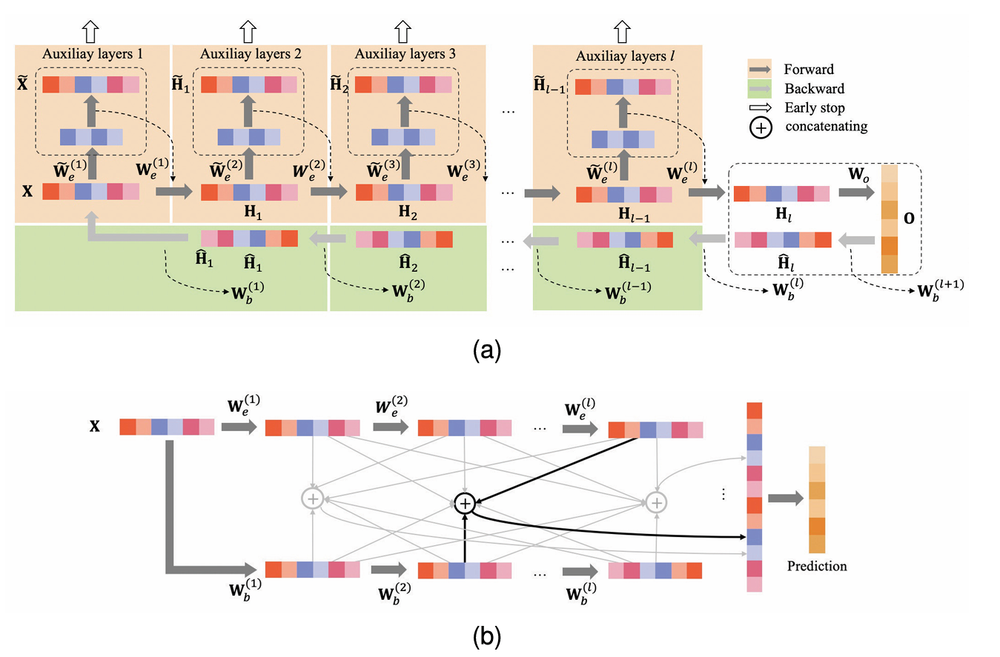

|
Sanjay R3rd Year Student, AI & Data Science in Medical Engineering
Sanjay R, last updated: 2026-06-28
LinkedIn: Sanjay Rajendran (Professional networking)
Address: Amrita Vishwa Vidyapeetham, Ettimadai, Coimbatore, TN
I am a passionate third-year undergraduate student pursuing B.Tech in Artificial Intelligence and Data Science in Medical Engineering at Amrita Vishwa Vidyapeetham, Coimbatore. My academic interests lie at the intersection of AI, machine learning, and its application in real-world systems, ranging from advanced defense interception protocols to medical technology and language processing.
Core: Python | Java | SQL | Verilog
Iron Shield Demo
Iron Shield Real Time Defense System Using Neural Network (2025)Co-authored an IEEE ICETCI 2025 publication proposing an automated defense system utilizing edge deployment and neural networks to accurately trace and calculate missile trajectories, ensuring optimal resource management and automated interception tuning.
DQN Space Invaders Demo
DQN Space Invaders AgentTrained and deployed a reinforcement learning model using Stable Baselines3 to Hugging Face (65+ monthly downloads).
A2C Robotic Control Demo
A2C Robotic Control AgentTrained an A2C agent for continuous robotic manipulation (PandaReachDense-v3), deployed to Hugging Face (35+ monthly downloads).
Tamil AI Overview
Tamil Literature ModelConstructed a novel machine learning architecture intended to parse and comprehend nuances distinct to historic and contemporary Tamil literature, enriching regional language computation models.  PIL FrameworkPIL RepositoryAn open-source repository outlining personalized scripting workflows, image processing tests (Python Imaging Library), or algorithmic tools developed during general computational logic experiments.
OMR System
OMR Evaluation AutomationAn automated computer vision grading system optimized to read, align, and grade test sheets automatically using OpenCV logic, rendering manual scoring redundant. |